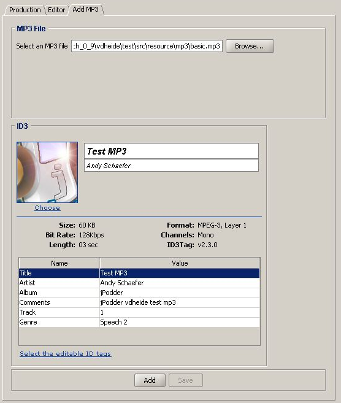
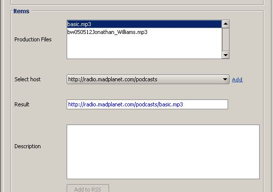

Adding an enclosure to your feed is done in two easy steps. First you need to select an audio file (Your recently recorded podcast), set information tags. (Listeners downloading your feed with jPodder will see this information tags appear in their media player) and add the file to the production. Secondly you set the URL of the podcast and write the podcast item (including the URL with the correct enclosure) into the feed.
It's important to distinguish the difference between adding the podcast to the production as to adding the podcast to the feed. In the production, the podcast is still a working item whereby the enclosure URL is initially not set. Only after you have entered a correct URL, the podcast can be added to the feed. When doing so, the podcast is wrapped into an RSS item including the enclosure, description and the current date and time. You can always see the results in the RSS editor. When editing directly into the RSS editor, changes will only be reflected in the production tab when pressing save Step 3A Add/Open an audio file. To add a new audio file to your feed click on the link. In order to edit an existing podcast just double click on it. After selection (browse button an audio file the Add MP3 tab will look like this:
The tab contains these elements:
| Select an MP3 File | Field to enter the location of the audio file |
| Browse... button | Brings up a file selection dialog to select the audio file |
| Link | The pointing to the feed on the web |
| ID3 Box | lists the currently available tags of the MP3 audio file. Works like the File Tag Dialog |
| Add | adds the audio file to the production (will display a dialog box if the audio file already exists). The podcast is not yet added to the RSS feed. This will be done after we have set a correct URL for the audio file and filled in the description. (See below) |
| Save | saves the changed audio tags |
Step 3B Set the URL and Description. Going back to the production tab it looks like this: 
The tab contains these elements:
| Production Files | List of all the current enclosures of this feed |
| Select host | Allows you to select a known host where the podcast is hosted |
| Add | Allows you to add a new |
| Result | The URL of the location of podcast The URL is calculated from the podcast file name plus the selected host name. You can also simply type in the URL, but the host will not be remembered. It's better to add a host using the "Add" button |
| Description | This the item description which will appear in the feed item section for this enclosure The description is stored as formated HTML. The description field shows formated HTML. |
| Add to RSS | Adds the enclosure to the feed. You can verify the final result by going to the feed editor and check that the enclosure URL for the podcast is correct. |